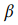
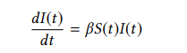
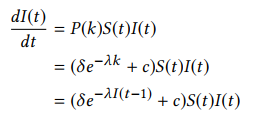
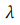
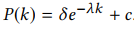
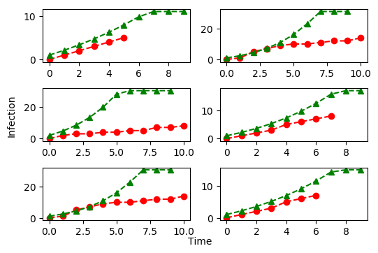
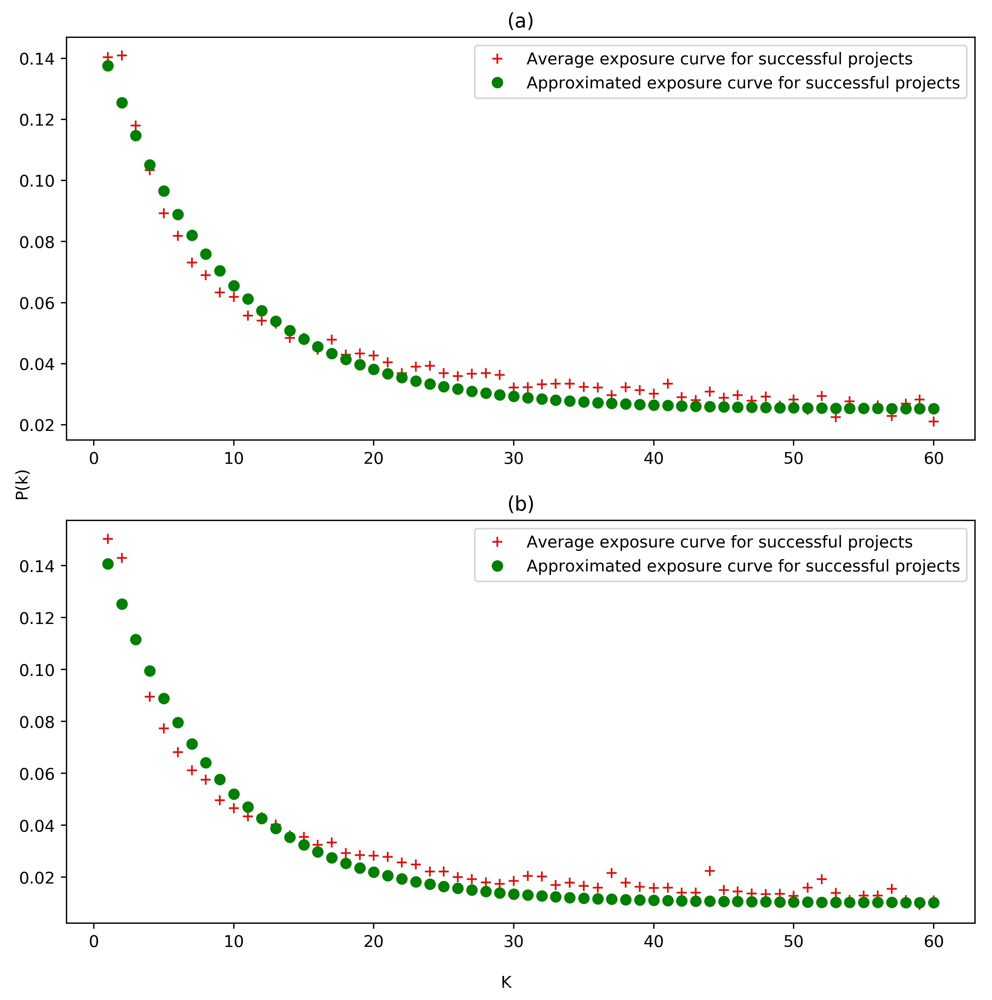
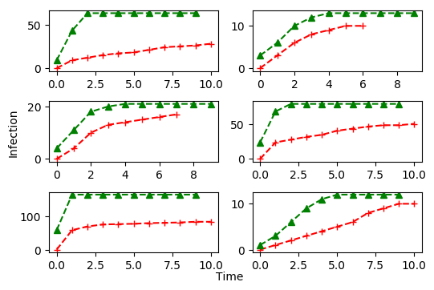

Virginia Tech - Department of Computer Science
Virginia Tech - Department of PGG, Urban Computing Certificate, and Global Forum on Urban Resilience
In recent years, crowdfunding has emerged as a popular communitybased, micro-financing model for entrepreneurs, artists, and activists alike to bring their respective dreams into fruition. Successful campaigns, those which meet their financial goals, bring with them not only the financial utility for the creator, but also social utility for the backers. As such, much attention has been paid in recent years to predicting which campaigns will have the greatest likelihood of success. Rooted in this historical research, this project adapts the model of social media exposure curves of hashtags by Romero, Meeder and Kleinberg [1] to understand contagion spread in Kickstarter crowdfunding campaigns through its twitter network.
This project attempted to adapt the work of Romero, et. al.[1]. In this work, we aimed to understand how social campaign can improve the success of crowdfunding projects through stickiness and persistence of tweets through a network. However, due to the limitations of the twitter dataset (e.g., full network, nodes and neighbors were unknown), we sought to understand the infection rate (the rate of tweeting about a project) in as detailed in two models, a simple SI contagion model and a complex contagion model.
Simple model: For simple model, our aim is to approximate the  from a simple SI model, i.e. 
Complex Contagion Model: In this model,
we approximate the probability of a user after being exposed
to k tweets from his/her neighbors and replace the beta in
the simple model. The equation for the complex contagion is
the following:

Where c is a constant,  is the decay rate, and P(k) is .Actual versus the predicted infections are displayed over 10 days in the following figure using simple model.
Two exposure curves, exponentially decay in nature, have determined for all the successful and failed projects. The following figure illustrates the curves.
Actual versus predicted infections are displayed over 10 days in the following figure using complex contagion model.
Final Report: PDF
Software: tar-ball
Dataset: (i) Crowdfunding project dataset, (ii) Twitter dataset
1. Daniel M. Romero, Brendan Meeder, and Jon Kleinberg. 2011. Differences in the mechanics of information diffusion across topics. Proceedings of the 20th international conference on World wide web - WWW ’11 (2011), 695. https://doi. org/10.1145/1963405.1963503